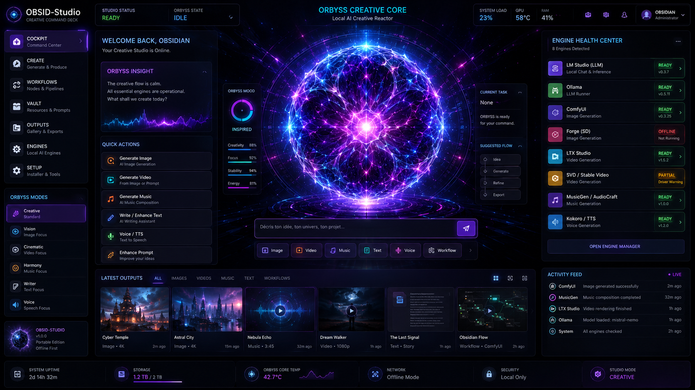

⚙
Trop technique
Nodes, modèles, ports, scripts, dépendances, versions, chemins dispersés. La puissance existe, l’expérience manque.
OBSID-Studio transforme ton PC en studio créatif local-first : moteurs IA, assistants locaux, projets, outputs, workflows, mémoire et états système réunis dans une interface claire.
Créer. Organiser. Réutiliser. Exporter. Garder le contrôle.
Les moteurs locaux donnent du contrôle, mais la plupart des créateurs se perdent dans les outils, les dossiers, les modèles, les ports et les workflows.
Nodes, modèles, ports, scripts, dépendances, versions, chemins dispersés. La puissance existe, l’expérience manque.
ComfyUI, LM Studio, Ollama, Forge, TTS, musique, vidéo, outputs : chaque brique vit dans son coin.
Prompts perdus, fichiers sans métadonnées, variations impossibles à retrouver. Le chaos tue la création.
OBSID ne remplace pas tes moteurs. Il les rend utilisables : il connecte, guide, organise et prépare les outputs pour que tu produises au lieu de configurer pendant trois jours.
Moteurs, états, ressources, disponibilité, blocages.
Image, vidéo, musique, voix, texte, workflows.
Outputs, thumbnails, metadata, projets.
Prompts, presets, workflows, variations.
Dossiers clients, packs, livrables, archives.
Le site vend une transformation simple : de l’idée vague à l’output rangé, retrouvable, modifiable et exportable.
Décris ton idée.
Un prompt, un brief client, une intention créative.
OBSID prépare le flux.
Le studio propose le moteur, le mode et le projet.
Le moteur local génère.
Image, texte, voix, musique ou workflow selon le contexte.
L’output est indexé.
Prompt, métadonnées, état, projet, aperçu.
Tu retrouves et exportes.
Variations, packs, dossiers clients, archives.
Pack visuel pour lancement produit. Style sombre, premium, énergie alien.
Engine: local
Mode: image
Proof: indexed
Project: launch-pack
Reuse: enabled
La génération est une couche. La valeur, c’est l’expérience : moteurs, assistants, projets, outputs, workflows, contexte, santé et packs.
Image, vidéo, musique, voix, texte, prompts, presets.
Chat créatif, guidage, raisonnement et tâches orientées production.
Liens contrôlés avec outils locaux, fichiers et services utiles.
Galerie, thumbnails, metadata, recherche et historique.
Presets, templates et chaînes créatives réutilisables.
Statuts moteurs, diagnostics clairs et corrections guidées.
Ressources, workflows, templates et packs white-label futurs.
Contexte projet, préférences, preuves et décisions utiles.
ORBYSS traduit visuellement ce que fait le studio : prêt, réflexion, génération, voix, blocage, erreur, récupération, puissance. Elle remplace les tableaux techniques morts par une présence lisible, étrange et utile.
Pas seulement puissant. Étrange, vivant, lisible.

OBSID prépare une boucle d’observation et d’adaptation pour rendre le PC créatif plus lisible, plus prévisible et plus stable.
Observe moteurs, ressources, projets et erreurs.
Analyse blocages, dépendances et signaux de performance.
Anticipe lenteurs, surcharges et risques thermiques.
Adapte modes créatifs, priorités et workflows.
Agit via actions validées, exports et corrections guidées.
Apprend préférences, historique, preuves et contexte projet.
OBSID-Studio s’appuie sur des briques déjà testées : cockpit, connexion moteurs locaux, génération image via ComfyUI, galerie d’outputs, thumbnails, metadata, réutilisation de prompts et sauvegarde projet.
La prochaine étape : finir l’UX, industrialiser ORBYSS, packager proprement et ouvrir une Founder Preview limitée.
Le but n’est pas de vendre trop tôt. Le but est de montrer la vision, valider l’intérêt, puis ouvrir proprement.
Prototype et preuves partielles.
En coursLanding claire + vidéo démo 60–90 secondes.
Prochaine étapeRuntime vivant, états, transitions et intégration produit.
À venirCréation, galerie outputs, metadata, reuse prompt, export.
À venirBeta créateurs limitée avec limites honnêtes et feedback prioritaire.
PrivéLes offres ne sont pas ouvertes comme produit final : elles servent à cadrer la future commercialisation.
Suivre la vision, recevoir les démos, comprendre l’évolution.
Accès anticipé limité, feedback prioritaire, premiers packs.
Studio local utilisable : chat, image, outputs, presets.
Diagnostics avancés, modules vidéo/musique, packs, support.
Aide à la mise en route des moteurs locaux et onboarding.
Pas de spam. Seulement les nouvelles importantes : démo, Founder Preview, lancement.
Non. La génération est une couche. OBSID vise aussi l’organisation, la réutilisation, les projets, les workflows, les outputs, le contexte et les preuves.
Non. Le positionnement est local-first. Des intégrations externes pourront exister plus tard, mais le cœur vise le contrôle local.
Non. NEXUS reste la forge interne. OBSID-Studio est le produit utilisateur final, simplifié et focalisé.
Non. Le prototype est en maturation. La Founder Preview servira à tester une version limitée, honnête et utile.
ORBYSS rend visibles les états du studio. C’est une interface vivante et utile, pas une décoration.